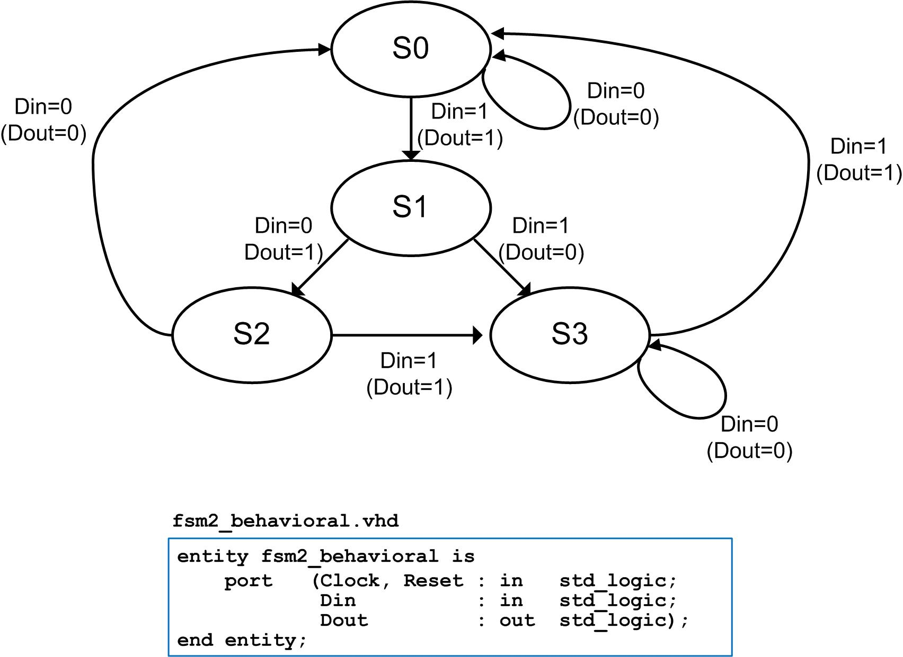
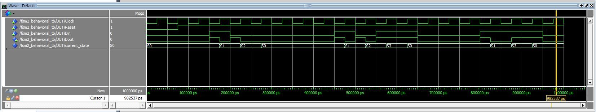

HW 9.3 - FSM Design Examples in VHDL
____________________________________________________________________________
9.3.3
Design a VHDL behavioral model to implement the finite state machine described by the state diagram in Figure 9.2. Use the entity definition provided in this figure for your design. Use the three-process approach to modeling FSMs described in this chapter for your design. Model the states in this machine with a user-defined enumerated type.

Figure 9.2
Deliverables: Simulate your model using ModelSim. You are to upload your VHDL design file (fsm2_behavioral.vhd) and a screenshot of your simulation waveforms (name it waveform_9_3_3.jpg) showing the proper operation of your FSM to the DropBox. The test bench is provided below.
fsm2_behavioral_TB.vhd (right click and select "save link as")
FYI, your simulation waveform should look like this:
